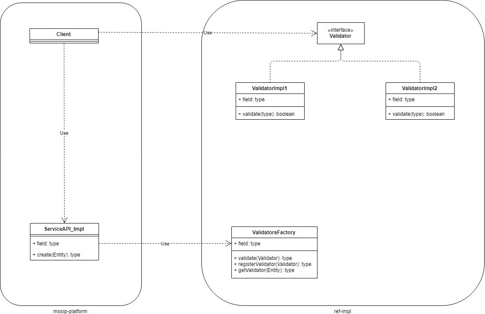

Master data - generic¶
Background¶
There can be new master data added to the system. The common service API can cater to the fetch operations of the master data. This API accepts the entity and the selection criteria as input and returns back the necessary master data.
Solution¶
The key solution considerations are
Following are the key considerations for the generic master data functionality,
Fetch master data
a. Common fetch service API
- The fetch service API accepts the ENTITY in the HTTP Request body. - Along with the Entity name, the set of query parameters are also passed in the HTTP request body. This is used as the CONDITION for the query. - The OPERATORS in the CONDITION is passed in the parameters. For example, =, !=, >, < etc., - Also the necessary CLAUSE OPERATORS are passed. For example, AND, OR, NOT etc., - I/p: Entity name. Eg., table_name Condition & Operators. Eg., date > '12-oct-2019' Clause operators. Eg., AND - Please refer the API spec "masterdata-generic-api-spec.md" for further details.
b. Criteria and Limitations
i. data type - Following data types are supported, i. string ii. int iii. boolean iv. date ii. operators in condition - Following are the OPERATORS in CONDITION are supported, i. EQUALS ii. GREATER THAN iii. LESS THAN iii. clause operators - Following are the clause operatos which are supported, i. AND ii. OR iv. Return JSON will be of flat structure. No nested structure is supported. iv. Return JSON structure will not have any types such as number, boolean or string.
Addition of new master data¶
Database
new DB tables and constraints have to be added in the database
Service API
No Change
Data API
New validators have to be developed for the business level validations by the developer
These validators have to extend the default validators and inject to the Generic entity.
Custom Validators¶
- In case is any body wants to introduce a business validation, one has to extend the generic service API and have to inject the dependency of the Validator. To do this, the developer implements a Validator interface. Then for a specific entity, an implementation is created from Generic entity and injects the validators.
- The custom validators are placed in a separate respository of the ref-impl.
